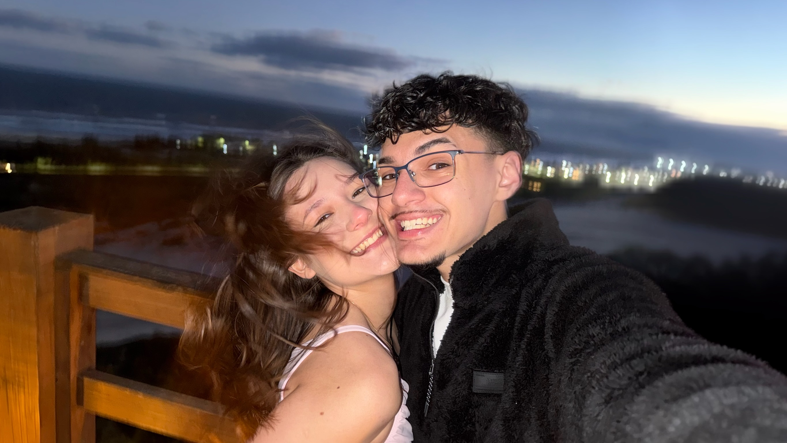
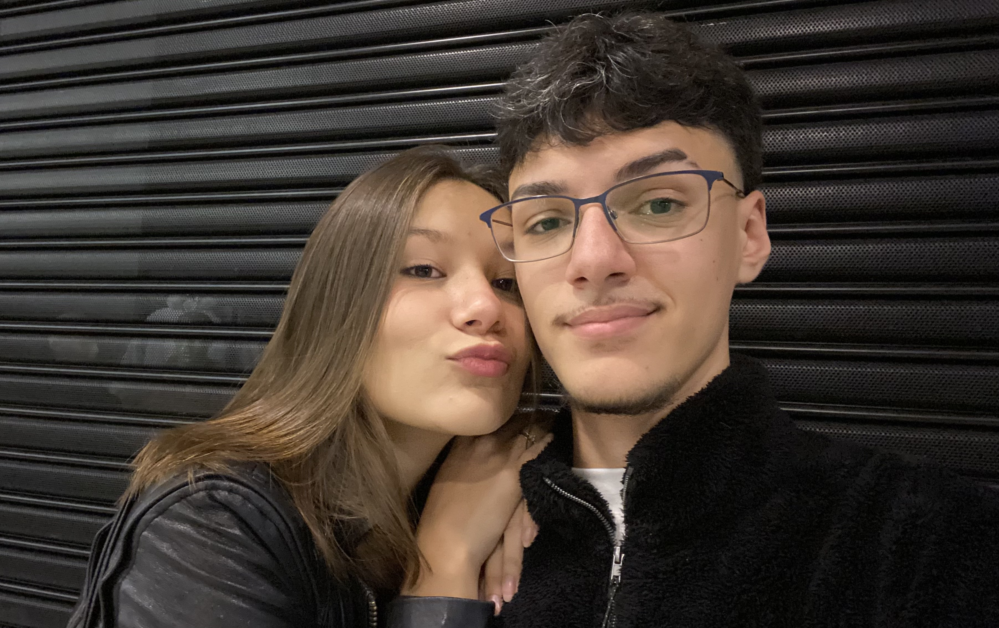
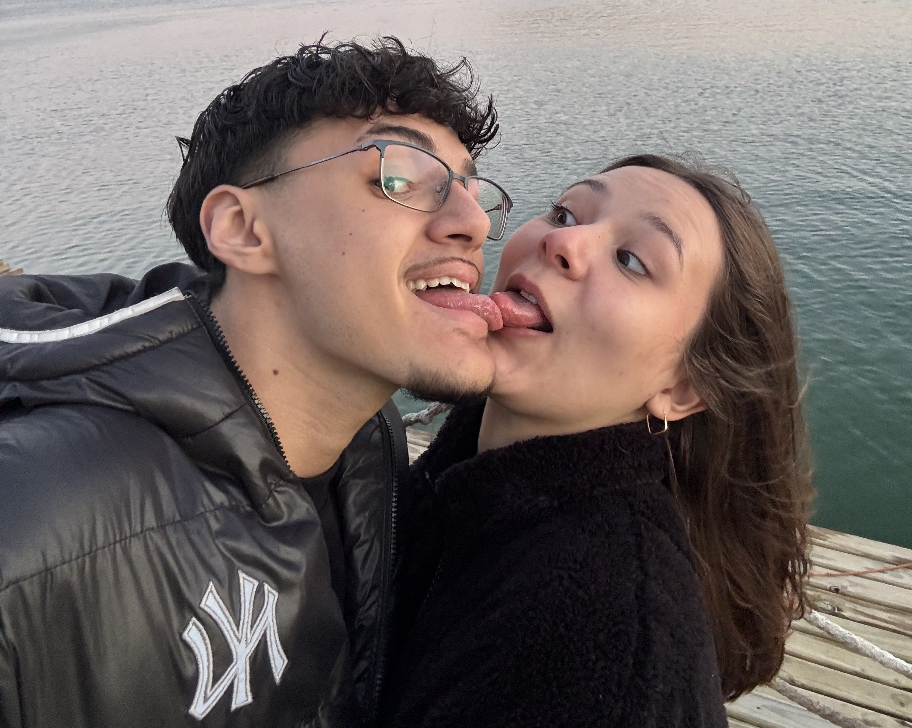
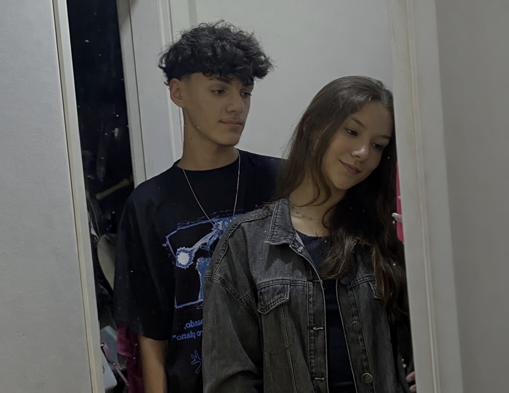

Para a pessoa mais especial da minha vida
Uma homenagem para a pessoa que está cmoigo todos os dias, até quando estou insuportável (nunca estive).
Meu primeiro site é totalmente dedicado a você, meu amor! 💝
Quisera eu ser imortal para poder te amar por toda a eternidade. Que sorte a nossa de nos encontrarmos tão novos para vivermos nosso amor a vida inteira! 🧑❤️💋🧑
Obrigado por estar sempre ao meu lado, me apoiando e me fazendo sorrir. Você é a razão do meu sorriso e a luz que ilumina meus dias. Não sei o que faria sem você! ❣️



